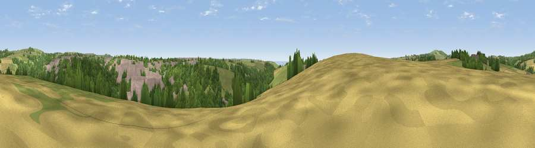

Viewpoint near Helston
#32026 in England · top 71% of its area beats it · near HelstonWhere it is
The exact computed spot (SW 65075 27425). Click the marker for map links.
The view, rendered

A 360° render of this exact spot computed from the terrain model, tree cover and land cover — summer colours, afternoon light, calibrated against photographs of famous viewpoints. Real trees, hedges and buildings will differ in detail.
The panorama
Grey silhouette: terrain skyline in each direction (720 bearings, Earth curvature and refraction included). Dashed green: skyline with trees (+15 m) and buildings (+8 m) as obstacles. Blue strip: how far the ground is visible on each bearing.
Where the view opens
Wedge length = distance to the farthest visible ground on that bearing (vegetation-aware). Rings at 10, 25 and 50 km.
What fills the view
36% woodland · 34% grassland · 20% built-up · 10% cropland ·
Angular shares of the visible panorama (visual magnitude), not map area. Landscape diversity 0.57 (0–1 Shannon).
Key numbers
More beautiful places nearby
The staircase of upgrades: each row has a higher view potential than everything closer. Driving times are estimates from straight-line distance, calibrated against real road routing — check an actual route before setting out.
| Place | Direction | Drive | Score |
|---|---|---|---|
| Viewpoint near Porthleven | SSW · 3 km | ~7 min | 68.8 |
| Viewpoint near Ashton | W · 5 km | ~11 min | 71.1 |
| Viewpoint near Ashton | WNW · 5 km | ~11 min | 81.3 |
| Tregonning Hill | WNW · 6 km | ~12 min | 83.0 |
| Rosewall Hill | WNW · 20 km | ~34 min | 88.0 |
| Viewpoint near Combe Martin | NE · 153 km | ~176 min | 88.9 |
| Holdstone Hill | NE · 154 km | ~177 min | 90.2 |
| The Knoll | ENE · 197 km | ~216 min | 91.0 |
50.10035, -5.28641 · source: screening · position refined by local search. Computed location — check access rights before visiting.